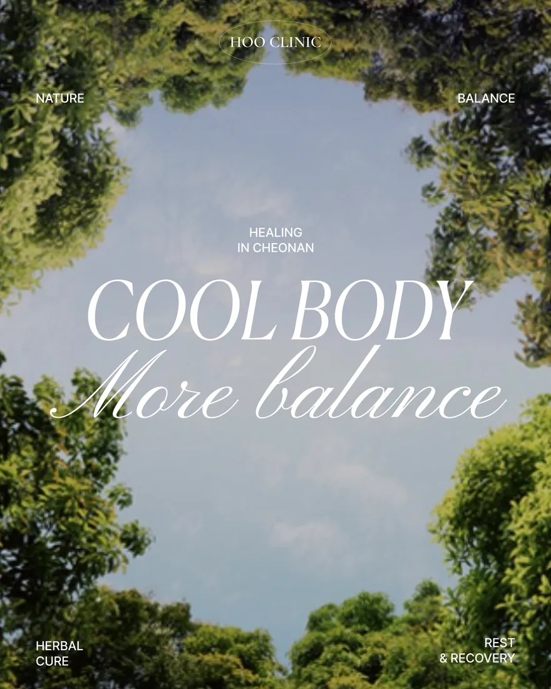

이곳에서 다루는 주제
| 비염 | 계절마다 반복되는 코막힘, 콧물, 재채기 |
|---|---|
| 임신소양증 | 임신 중 배·팔다리에 생기는 가려움 |
| 태열 | 아기 얼굴과 몸에 올라오는 붉은 열꽃 |
| 턱관절 | 입을 벌릴 때 나는 소리, 턱 뻐근함, 이 악물기 |
※ 임신 중이거나 아이와 관련된 고민은 상태에 따라 판단이 크게 달라지므로 꼭 진찰 후 상의해 주세요.
기타 칼럼
이 분야의 칼럼이 곧 올라옵니다.
MORE
피부와 체형 고민은 몸의 다른 불편과 함께 오는 경우가 많습니다. 코가 막혀 잠을 설치거나, 임신 중 가려움이 심하거나, 아이 얼굴에 태열이 올라오거나, 턱이 뻐근한 것처럼 진료실에서 함께 여쭤보시는 고민들을 이곳에 모아 정리합니다.

| 비염 | 계절마다 반복되는 코막힘, 콧물, 재채기 |
|---|---|
| 임신소양증 | 임신 중 배·팔다리에 생기는 가려움 |
| 태열 | 아기 얼굴과 몸에 올라오는 붉은 열꽃 |
| 턱관절 | 입을 벌릴 때 나는 소리, 턱 뻐근함, 이 악물기 |
※ 임신 중이거나 아이와 관련된 고민은 상태에 따라 판단이 크게 달라지므로 꼭 진찰 후 상의해 주세요.
이 분야의 칼럼이 곧 올라옵니다.
CONTACT
충남 천안시 동남구 만남로 52 문타워 3층
천안 동남구 신부동 · 천안터미널 도보 5~6분
휴진일은 예약 전 전화로 확인해 주세요.
건물 기계식 주차장 이용 가능
RV·SUV는 들어가기 어려워요. 신부동 제5공영주차장 이용 시 주차권을 드립니다.